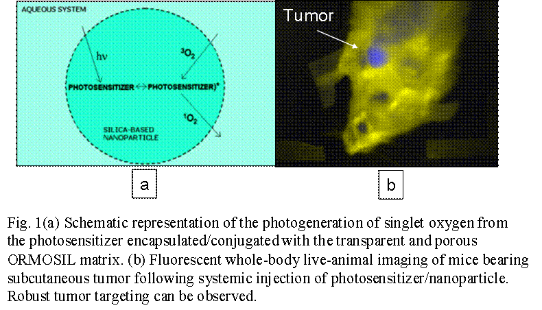
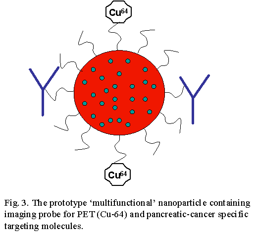

Indrajit Roy, Ph.D.
Research Assistant Professor, ILPB
Deputy Director, Biophotonics Division, ILPB
Institute For Lasers, Photonics And Biophotonics
458 Natural Science Complex
University at Buffalo
Buffalo, NY 14260-3000
(716) 645-4163
FAX: (716) 645-6945
iroy@buffalo.edu
www.photonics.buffalo.edu/roy

Research
Nanomedicine for Advanced Diagnostics and Therapeutics
- Photodynamic therapy (PDT) of cancer:
(In collaboration with Prof. Ravindra Pandey at RPCI)Photodynamic therapy (PDT) is based on the concept that when certain photoactive molecules called photosensitizers (PS) are irradiated with light, they generate highly reactive oxygen species (ROS) upon energy exchange with molecular oxygen. Since these PS molecules have an inherent avidity of tumor sites, PDT is used as a robust anti-cancer approach where the photo-generated ROS bring about irreversible damage to tumor cells. PDT, which originated at Roswell Park Cancer Institute, Buffalo, is now routinely used in the clinical setting for combating various types of cancers as well as dermatological and several other diseases.

Here, we are probing organically modified silica (ORMOSIL) nanoparticles as a tumor-specific delivery vehicle for the PS drugs. We have found that the spectroscopic and functional properties of the PS are preserved following encapsulation/conjugation with the nanoparticles. Preliminary experiments with cultured cells (in vitro) and experimental animals (in vivo) have demonstrated robust tumor-specific accumulation of the photosensitizer/nanoparticles composite. At present, we are analyzing the photodynamic anti-tumor effect of these nanoparticles in various mouse models of cancer.
- Gene Therapy using nanoparticles:
(In collaboration with Dr. Michal Stachowiak at UB south Campus) Gene therapy is a collective term which is given to numerous possibilities that can be brought about by manipulation at the genetic level. Aims of gene therapy include (a) correction of diseases related to single-gene malfunctions (like cystic fibrosis) by replacing the defunct gene with functional ones, (b) silencing of malevolent genes like the cancer causing oncogenes and (c) development of transgenic animal models of various diseases which would help accelerate the search for their cure.
Nanoparticles play a major role in this gene transfer as unlike viruses, the natural gene transporters, they are not associated with toxic side-effects. In our laboratory, we have developed cationically modified ORMOSIL nanoparticles that can bind and protect DNA and efficiently transfer genes across a number of cell lines, while displaying minimal toxicity. In animal studies, we have found that these gene doped nanoparticles can robustly transfect cells in the central nervous system (CNS). At present, using the nanoparticles we are investigating the effect of therapeutic gene transfer on experimental animals carrying various disorders of the CNS such as Parkinson's and Alzheimer's disease.

- Early Detection of Pancreatic Cancer
(In collaboration with Dr. Anirban Maitra at Johns Hopkins University: Medicine, Baltimore)Pancreatic adenocarcinoma (a.k.a. pancreatic cancer) is the fourth most common cause of cancer-related mortality in the United States, accounting for nearly 31,000 deaths each year. The vast majority of patients present with locally advanced or distant metastatic disease, rendering the cancer inoperable as well as beyond chemo- and radiation therapy. Therefore, it is imperative that we develop sensitive imaging strategies for diagnosing pancreatic cancer at an early, and hence potentially curative, stage. This is particularly true in individuals known to be "at risk" for developing the malignancy, such as families with an inherited predisposition to pancreatic cancer.

Nanoparticles containing multiple imaging probes as well as target-specific molecules have the promise of early diagnosis of cancer at both cellular and tissue levels. For this purpose, we are developing several kinds of nanoparticle platforms, which includes (a) organically modified silica (ORMOSIL), (b) cadmium sulphide (CdSe) quantum dots/rods, (c) gold nanospheres/nanorods, (d) rare-earth doped nanophosphors, (e) zinc-oxide nanoparticles, etc. These nanoparticles are being further developed for the purpose of performing a number of tasks: (1) carry probes for optical imaging, (2) carry probes for positron emission tomographic (PET) imaging, and (3) carry pancreatic cancer specific targeting molecules. Advanced small-animal studies are also being performed at the Johns Hopkins University: Medicine, using a biologically relevant, spontaneously metastasizing mouse model (orthotopic model) of pancreatic cancer.